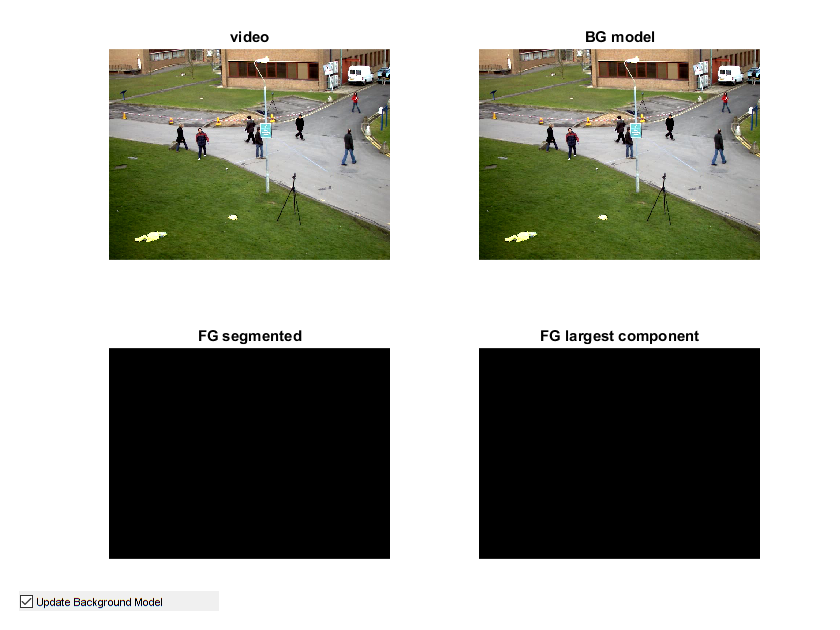
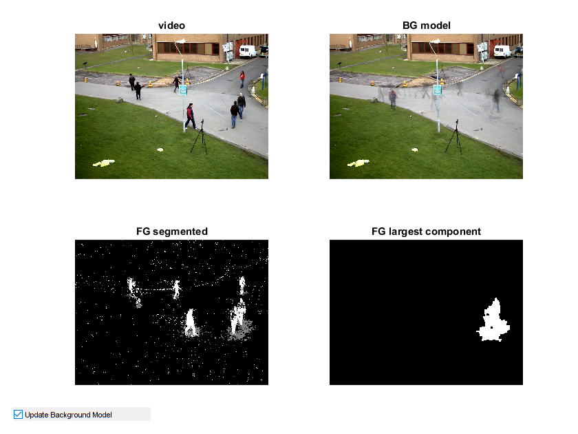

Background Subtraction demo
An example using drawContours to clean up a background segmentation result.
This program demonstrates a simple method of connected components clean up of background subtraction. When the program starts, it begins learning the background. You can toggle background learning on and off using the checkbox.
Sources:
Contents
Set up video source: video file or camera
fname = fullfile(mexopencv.root(),'test','768x576.avi'); if exist(fname, 'file') ~= 2 % download video from Github disp('Downloading video...') url = 'https://cdn.rawgit.com/opencv/opencv/3.1.0/samples/data/768x576.avi'; urlwrite(url, fname); end cap = cv.VideoCapture(fname); %cap = cv.VideoCapture(0); pause(2); assert(cap.isOpened(), 'Cannot open video source'); cap.PosFrames = 750; frame = cap.read(); assert(~isempty(frame), 'Cannot read data from the video source');
Create a background subtractor
bs = cv.BackgroundSubtractorMOG2('VarThreshold',10);ZR = zeros(size(frame,1), size(frame,2), 'uint8');
niters = 3;Prepare window
hFig = figure('Position',[100 100 840 630], ... 'KeyPressFcn',@(o,e)setappdata(o,'flag',true)); setappdata(hFig, 'flag',false); subplot(221), hImg(1) = imshow(frame); title('video') subplot(222), hImg(2) = imshow(frame); title('BG model') subplot(223), hImg(3) = imshow(ZR); title('FG segmented') subplot(224), hImg(4) = imshow(ZR); title('FG largest component') hCB = uicontrol('Style','checkbox', 'Position',[20 20 200 20], ... 'String','Update Background Model', 'Value',true);
Main loop
while ishghandle(hFig) % get next frame frame = cap.read(); if isempty(frame), break; end % determine whether to update BG model or not, then compute FG mask update_bg_model = get(hCB,'Value'); if update_bg_model learnRate = -1; % automatically chosen learning rate else learnRate = 0; % dont update BG model end fgmask = bs.apply(frame, 'LearningRate',learnRate); % process mask and extract largest connected component bw = cv.dilate(fgmask, 'Iterations',niters); bw = cv.erode(bw, 'Iterations',niters*2); bw = cv.dilate(bw, 'Iterations',niters); [contours, hierarchy] = cv.findContours(bw, ... 'Mode','CComp', 'Method','Simple'); if ~isempty(contours) maxArea = 0; largestComp = 0; idx = 0; while idx >= 0 % compute contour area a = abs(cv.contourArea(contours{idx+1})); if a > maxArea maxArea = a; largestComp = idx; end % iterate through all the top-level contours idx = hierarchy{idx+1}(1); end out_frame = cv.drawContours(ZR, contours, ... 'ContourIdx',largestComp, 'Hierarchy',hierarchy, ... 'Color',255, 'Thickness','Filled'); else out_frame = ZR; end % update images set(hImg(1), 'CData',frame) % video frame if update_bg_model % get the current BG model set(hImg(2), 'CData',bs.getBackgroundImage()) end set(hImg(3), 'CData',fgmask) % FG mask set(hImg(4), 'CData',out_frame) % largest contour in FG mask % Terminate if any user input flag = getappdata(hFig, 'flag'); if isempty(flag)||flag, break; end pause(0.1); end
release camera
cap.release()